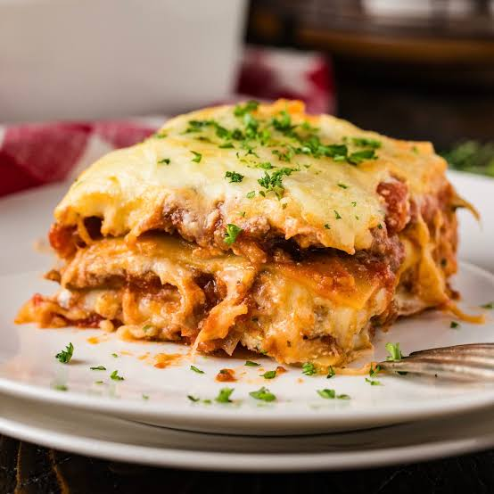

Back Home
Lasagna Recipe

Description
Lasagna is a classic Italian dish made with layers of pasta sheets, rich
meat sauce, creamy bechamel sauce, and melted cheese. It is baked in the
oven until the layers become tender and the top develops a delicious
golden-brown crust.
This hearty and flavorful meal is perfect for family dinners or special
occasions. Although it takes a little time to prepare, the combination of
savory meat sauce, creamy layers and melted cheese makes every bite
worthwhile.
Ingredients
- 9 lasagna pasta sheets
- 500g ground beef
- 1 medium onion, finely chopped
- 2 cloves garlic, minced
- 2 cups of tomato sauce
- 2 tablespoons tomato paste
- 2 tablespoons olive oil
- 2 cups milk
- 2 tablespoons butter
- 2 tablespoons all-purpose flour
- 1 ½ cups shredded mozzarella cheese
- ½ cup grated Parmesan cheese
- ½ teaspoon black pepper
- 1 teaspoon salt
- 1 teaspoon dried oregano
- ½ teaspoon mixed herbs
Steps
- Preheat the oven to 180°C (350°F).
- Heat olive oil in a pan over medium heat.
- Add the chopped onion and cook until soft.
-
Add the minced garlic and ground beef. Cook until the beef is browned.
-
Stir in the tomato sauce, tomato paste, salt, black pepper, oregano, and
mixed herbs.
- Allow the meat sauce to simmer for 15-20 minutes.
- In another saucepan, melt the butter over medium heat.
- Add the flour and stir for about one minute.
-
Gradually pour in the milk while whisking to prevent lumps. Cook until
the sauce thickens.
-
Spread a thin layer of meat sauce in the bottom of the baking dish.
-
Add a layer of lasagna sheets, followed by meat sauce and bechamel
sauce.
- Sprinkle some mozzarella and Parmesan cheese over the layers.
-
Repeat the layers until all ingredients are used, finishing with sauce
and cheese on top.
- Cover the baking dish with foil and bake for 25 minutes.
-
Remove the foil and bake for another 15-20 minutes until the cheese is
golden and bubbly.
-
Allow the lasagna to rest for about 10 minutes before slicing and
serving.